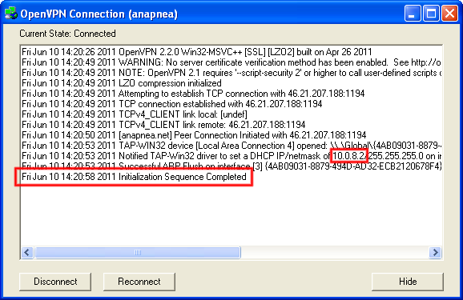

Using the Anapnean VPN (Windows)
To start with, we're going to download three things:
You may wish to verify the integrity of these files (see a
SSH connecting article for more information on why this is important).
An easy way to ensure that the Anapnean configuration and certificate files have not been tampered with is to download them using
SFTP (SSH is much harder to intercept than HTTP). Download them using a
SFTP client from the
/var/www/tutorials/windows_openvpn/ folder.
Install the OpenVPN software, and then copy the two files you downloaded, anapnea.ovpn and anapnea.crt into
the C:\Program Files\OpenVPN\config directory, as shown below.
Okay, now let's connect. Click on the OpenVPN GUI shortcut on your desktop or in the OpenVPN folder in the Applications menu.
No application window will open, however, an icon will appear in the notification area. Right click it, and select connect.
OpenVPN will ask you for your username and password. These are the same credentials you use
to log into SSH.
Eventually you should see the following:

This means you are connected! All of your traffic to the internet and your LAN is
completely unaffected, however, you can now communicate with other Anapnea users
that are connected to the VPN. All Anapnea VPN IP addresses begin with
10.0.8. In this example, I've been given IP 10.0.8.2.
You can disconnect and reconnect by right clicking the OpenVPN icon in the notification area,
and if you close or restart all you need to do to reconnect is to open the OpenVPN GUI,
right click, and connect.